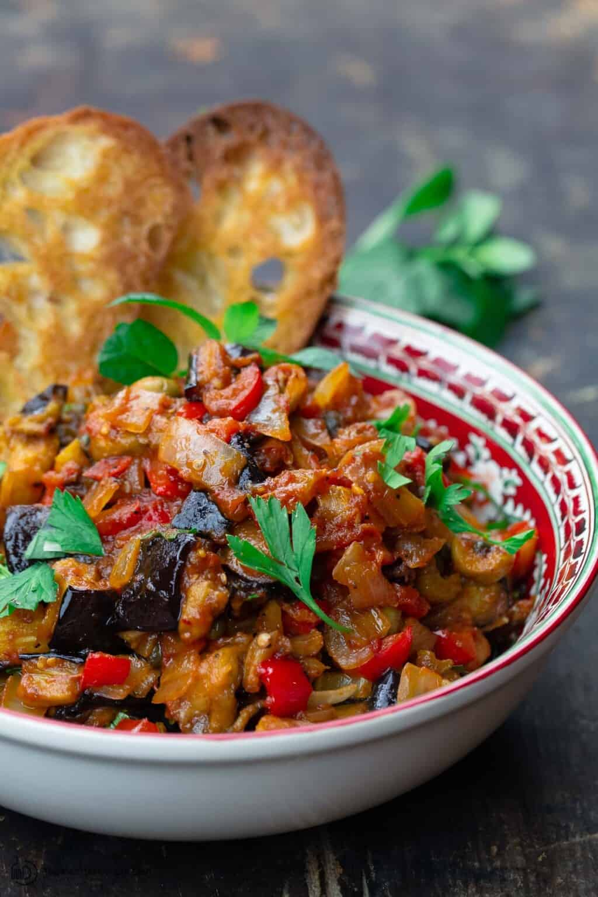
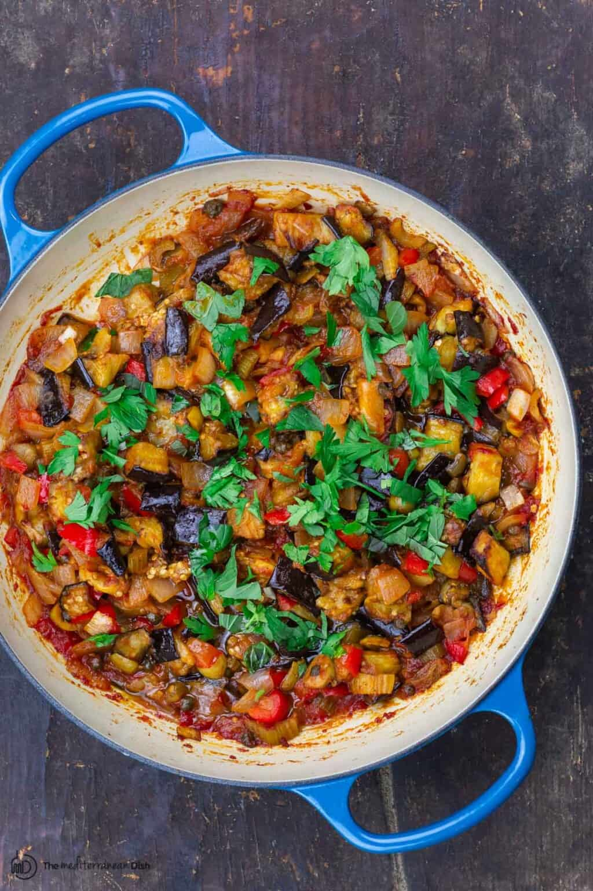
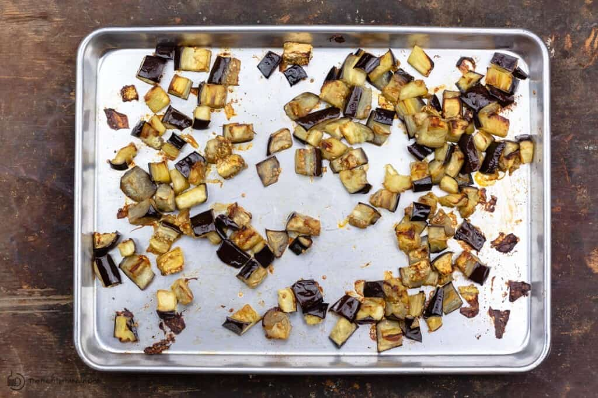
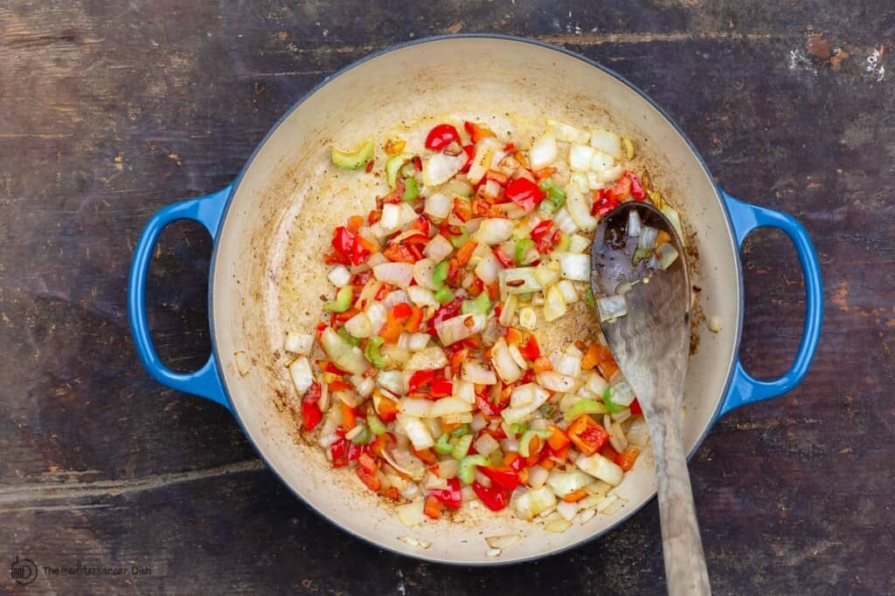
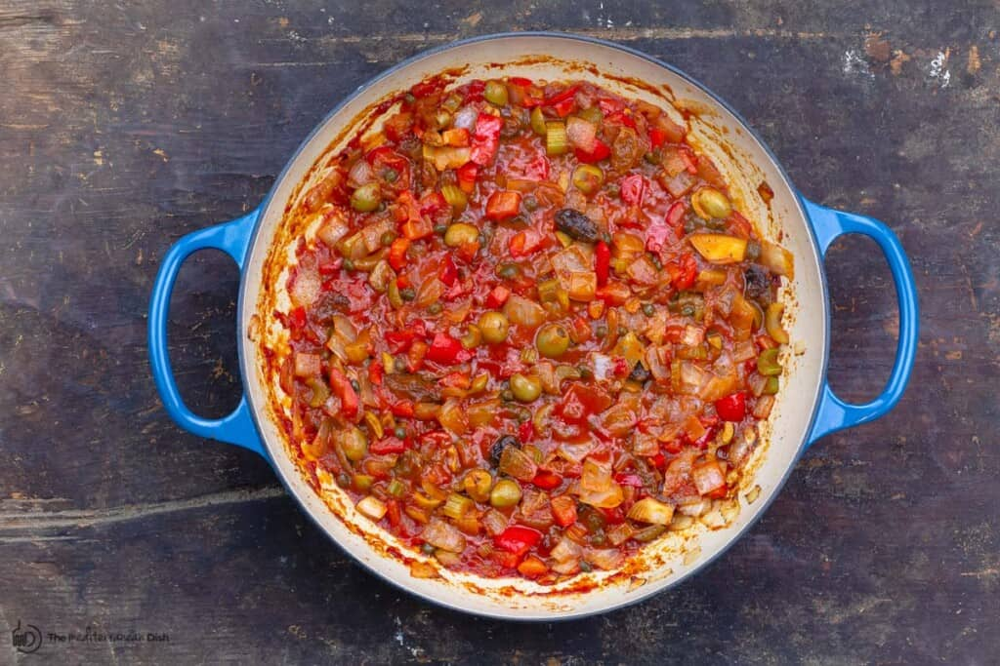
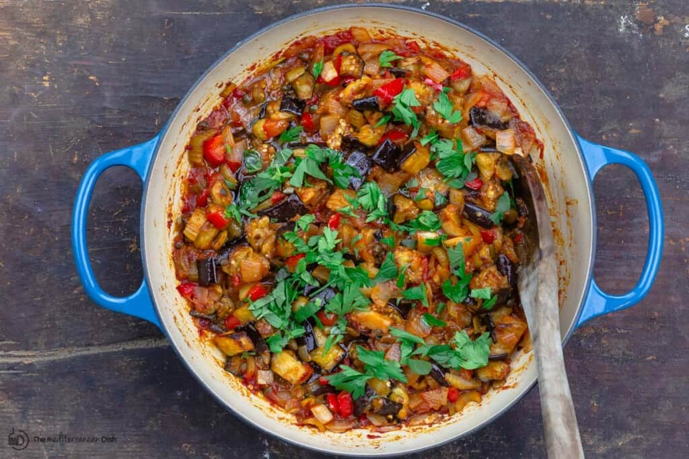

Eggplant Caponata

You 'll love the combination of savory, sweet, and sour flavors in this creamy eggplant caponata with onions, tomato and olives! A great make-ahead appetizer to serve over crusty bread or use next to chicken or fish!
Love this recipe? Try It!
In Mediterranean cooking, there is no shortage of tasty eggplant recipes! Some favorites around here include eggplant rollatini; classic moussaka; and stuffed eggplant.
I'm excited to add one more tasty eggplant creation from Italy: Caponata!
You'll love the loads of texture and flavor in this vegan eggplant salad. And because it tastes better the next day, it's the perfect make-ahead appetizer to serve over crostini or toasted bread of your choice.
Caponata Sicilian is one of Sicily's essential dishes. Pronounced ka·puh·naa·tuh, it is a vegetarian eggplant salad--more like a relish, really--made of eggplant, onions, bell pepper, celery and tomatoes with briny olives and capers.
There are variations of this tasty eggplant salad. Most are spiked with vinegar. Some call for raisins, which I love and use in this caponata recipe.
For a kick of sweetness, many recipes call for brown sugar, but I use a bit of honey, which is sufficient given the addition of raisins.

Roast the eggplant. Cut the eggplant into 1-inch cubes and season with salt (I like to let my salted eggplant sit in a colander for a few minutes to sweat out any bitterness, but that is optional. If you do this, just be sure to pat the eggplant dry). Toss the eggplant with a generous amount of extra virgin olive oil and spread on a large sheet pan. Roast in 400 degrees F heated-oven for about 25 to 30 minutes or until fully cooked and tender.

Cook the onions, bell peppers and celery in a large skillet with a bit of extra virgin olive oil until softened. Season with salt.

Add the rest of the ingredients to make the sauce base. To the same skillet, add crushed tomatoes, capers, olives, raisins, honey, bay leaf and crushed pepper flakes. Stir in the vinegar and white wine. Stir to combine. Simmer on medium-low heat for 10 minutes.
Cook the onions, bell peppers and celery in a large skillet with a bit of extra virgin olive oil until softened. Season with salt.
Add the rest of the ingredients to make the sauce base. To the same skillet, add crushed tomatoes, capers, olives, raisins, honey, bay leaf and crushed pepper flakes. Stir in the vinegar and white wine. Stir to combine. Simmer on medium-low heat for 10 minutes.
Stir in the eggplant. Since the eggplant is fully cooked, simply stir it in with the rest of the ingredients and allow it to cook for 2 to 3 minutes or so together, then finish with fresh parsley and mint.


Eggplant caponata is better the next day, but if you need to serve it on the same day, let it sit at room temperature for 1 hour before serving.
If you love this caponata, then our equally delicious zaalouk is a must try. An eggplant dip with a Moroccan twist!